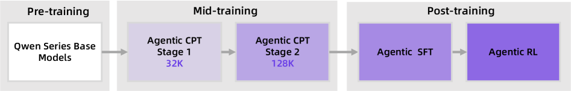
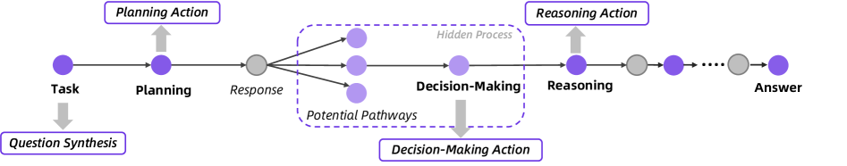
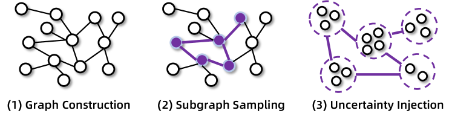
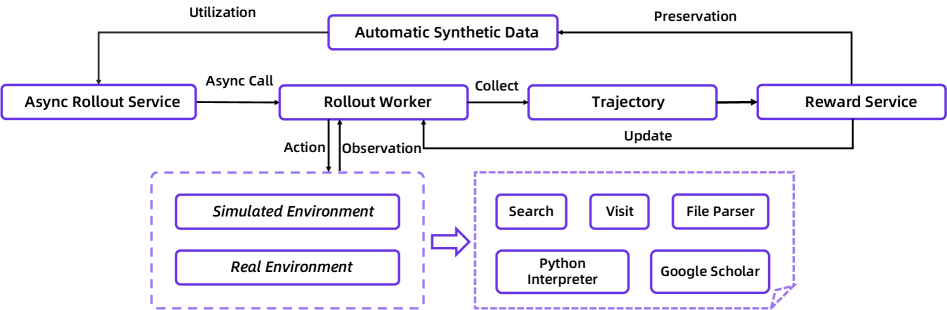

Tongyi DeepResearch：用合成数据养出的开源「深度研究」智能体 Tongyi DeepResearch Technical Report · 一个 3.3B 激活参数却比肩大模型的 agentic LLM
TL;DR · 一句话抓住核心
「深度研究」（Deep Research）指让模型像人类研究员一样，自主地多步规划、上网搜索、跨源推理并综合成报告——本来要人花几小时，agent 几十分钟搞定。难点不在模型不够聪明，而在这类 agentic 训练数据极度稀缺、贵且难标注。
Tongyi DeepResearch 的答案是：① 一条全自动、零人工标注的合成数据管线贯穿所有训练阶段；② 把训练拆成「中期训练（Agentic CPT）+ 后期训练（SFT 冷启动 + 强化学习）」的端到端范式；③ 把环境当成可设计的系统（先验世界 / 模拟 / 真实），用定制版 GRPO 做严格 on-policy 的稳定 RL。结果：仅 3.3B 激活参数就在 Humanity's Last Exam、BrowseComp 等深度研究基准上达到 SOTA，超过 OpenAI o3、DeepSeek-V3.1 等更大的系统。
（总参 30.5B 的 MoE）
（超 OpenAI o3 的 24.9）
（Heavy 模式 58.3）
（多项基准登顶）
01 问题：为什么「深度研究智能体」这么难造
不是缺一个更大的模型，而是缺「教会模型怎么当研究员」的数据与训练范式。
随着我们向 AGI 迈进，深度研究 agent 成为一种很有前景的范式：它能自主完成多步推理与互联网信息检索，去解决复杂的研究型任务。但今天能力强的深度研究系统（OpenAI / Claude / Gemini / Grok 的 DeepResearch）几乎都是闭源的，中间的研究过程也不可见，社区缺少一套系统化、可完全开源复现的方法论与模型。
真正的瓶颈在数据。深度研究要求 agent 能串联信息、跨源推理、验证结论，而这类「研究级问题 + agent 轨迹」的数据有两个先天困难：
- 自然语料里几乎没有：研究级难题不会现成地躺在网页文本里，不像预训练语料那样天然海量。
- 人工标注极贵极慢：让标注员理解并写出复杂问题的结构、再补全完整 agent 轨迹，成本高到无法规模化。
于是本文的整体思路就被这个约束逼了出来：既然真实数据无法扩展，就转向用大模型「全自动合成」agentic 数据，并围绕它重新设计训练管线和训练环境。下面三节就是这套答案的三块基石。
02 三条设计原则：和「常见做法」的对照
论文不是综述，这里只挑出本文与主流做法形成对比的三处关键取舍。点开每张卡看「常见做法卡在哪 → 本文怎么改」。
常见做法卡在哪：通用基座只在网页纯文本上预训练、再用指令数据做后训练，本身缺乏 agentic 归纳偏置。直接在这种基座上做 agentic 后训练，会让模型同时学习「agent 能力」和「对齐」，两个目标互相冲突，结果次优。
本文怎么改：新增 agentic 中期训练（mid-training），用大规模高质量 agentic 数据先给基座注入 agent 先验，作为「预训练→后训练」的渐进过渡。后训练阶段再用 SFT 冷启动 + 强化学习：SFT 学会模仿优质示范、建立稳定行为基线，RL 则与环境闭环、用奖励信号把规划与执行能力内化、推到极限。
常见做法卡在哪：研究级问题难以从自然文本获取，人工标注问题与 agent 轨迹又极其耗时昂贵——靠自然数据根本无法把深度研究能力 scale 起来。
本文怎么改：系统性转向 LLM 合成数据，并指出它相对人工标注的几大优势：
- 易扩展：用 LLM 批量合成问答对，远快于人工。
- 易泛化模式与多样性：LLM 能理解难题结构、覆盖多样模式。
- 可定向强化元能力：把复杂任务拆成规划、信息综合、记忆管理等元能力，针对性造数据。
- 易验证：验证答案比从头解题容易得多。
- 能形成数据飞轮：训练一轮后更强的模型能合成更优数据，模型迭代进化。
常见做法卡在哪：全程只用真实世界环境训练有两大难题——非平稳性（环境动态变化导致数据分布持续漂移、训练不稳）与交互成本（每次 API 调用都要花钱，大规模探索代价高到不可承受）。
本文怎么改：不把环境当成被动的外部现实，而是主动设计成与训练深度耦合的系统，建模为三种形态：
- 先验世界环境：只给任务要素/工具/状态定义，agent 凭预训练知识自主挖掘轨迹——完美稳定、零成本、无限可扩，但没有真实反馈。
- 模拟环境：在本地构建可复现的真实交互副本——稳定、快、便宜，便于因果归因，但覆盖有限、存在 sim-to-real 差距。
- 真实环境：分布最真实、反馈最权威，是能力的终极考场，代价是昂贵、非平稳、有探索风险。
分阶段策略：中期训练主用先验世界 + 模拟环境低成本造大规模数据；后期训练先在模拟环境验证算法与策略，再把验证过的最优策略部署到真实环境做最终训练。
03 训练总览：一条从基座到智能体的流水线
整套配方从 Qwen3-30B-A3B-Base 出发，端到端地把 agentic 能力逐级注入。先看论文原图的骨架，再用下面的步进演示跟着每个阶段走一遍。

Tongyi DeepResearch 的端到端训练管线：预训练基座 → 中期训练（两阶段 Agentic CPT，32K→128K）→ 后期训练（Agentic SFT → Agentic RL）。
- Pre-training（预训练）：起点是 Qwen 系列基座（Qwen3-30B-A3B-Base，30.5B 总参 / 3.3B 激活），通用语言能力强，但缺乏 agentic 归纳偏置。
- Mid-training（中期训练）：两阶段 Agentic 持续预训练（CPT）。阶段一上下文 32K，阶段二扩到 128K，用大规模合成的 agent 行为数据建立「规划-推理-决策」先验。
- Post-training（后期训练）：先 Agentic SFT 冷启动给出稳定初始策略，再用 Agentic RL 在与环境交互中把能力推到上限。
- 箭头与配色：从左到右是单向、逐级递进的能力流水线；色块由浅到深直观表示 agentic 程度递增。
- 设计意图：相对「只做后训练」的主流做法，本文前移出一个中期训练桥接层，避免基座在后训练时同时学 agent 能力与对齐而产生优化冲突。
一句话总结：这条「预训练→中训练→后训练」主轴，是理解全文其余所有模块的骨架。
04 中期训练：合成「agent 行为」喂给基座
中期训练（Agentic CPT）是连接预训练与后训练的桥梁。它的目标不是塞更多文本，而是让基座先长出「会当 agent」的直觉，同时保住通用语言能力。
Tongyi DeepResearch 采用两阶段 Agentic 持续预训练作为核心中期训练：阶段一以 32K 上下文起步，阶段二扩到 128K 并引入 64K–128K 的长序列 agentic 数据，专门强化长程连贯的推理与行动；两阶段都穿插少量通用预训练数据以防遗忘，优化目标用标准的下一词预测损失。
关键在于怎么造这批 agent 行为数据。作者把一次完整的 agent 工作流（接到问题 → 反复反思与行动 → 收敛到答案）拆成四类可合成的关键步骤：

面向 Agentic CPT 的大规模 agent 行为数据合成：把一条 agent 轨迹（Task→Planning→…→Answer）拆成问题合成、规划、决策、推理四类动作分别合成。
- Question Synthesis（问题合成）：基于不断更新的开放世界知识，构建「实体锚定的开放世界记忆」，采样实体及其关联知识，生成带特定行为要求的问题（如多跳推理、数值计算）。
- Planning（规划动作）：对问题做分解并预测第一步动作。规划准确率与任务成败高度相关，用问题构建时的实体知识做拒绝采样以保证质量。
- Decision-Making（决策动作）：图中「Potential Pathways / Hidden Process」表示每个决策点都有多条潜在路径；作者把这一通常隐式的择优过程显式建模为一种独立动作类型。
- Reasoning（推理动作）：当工具返回海量含噪信息时，能否从噪声中蒸馏关键知识、构建连贯推理链直接决定成败；用两阶段生成 + 长度与答案一致性的双重过滤保证质量。
- 整条链路：Task→Planning→Response→（多路径决策）→Reasoning→…→Answer 覆盖 agent 从接题到给答案的完整生命周期，灰/紫节点标示不同动作在轨迹上的位置。
一句话总结：中期训练喂的是「成体系的 agent 行为轨迹」，而不是更多纯文本。
通过「环境扩展」合成通用函数调用数据
为增强通用 agentic 能力，作者还系统性地扩展函数调用（function-calling）数据：函数调用能力的广度，与 agent 训练时所处环境的多样性紧密相关。他们遵循「agent 的核心在于与环境交互」的原则，把每个环境实例化为一个可读写数据库，并设计一个可扩展框架来自动构造大量完全模拟的异构环境，从而系统地拓宽函数调用场景的空间。产出的数据被并入中期训练。
05 后期训练：合成高质量数据 → SFT 冷启动 → 强化学习
后期训练分三步：先合成高质量、可验证的数据，再用 SFT 给模型一个稳定起点，最后用强化学习在与环境交互中把能力推到极限；末尾再做一次模型合并。
5.1 高质量数据合成：可控地「制造难度」
作者构建了一条端到端、全自动、零人工的合成管线，专门产出复杂、高不确定性的「超人类级」问答对，用来逼出 agent 的能力上限。

高质量数据合成管线：(1) 构建知识图谱 → (2) 采样子图生成种子 QA → (3) 注入不确定性以可控地提升难度。
- (1) Graph Construction（图构建）：通过随机游走构建高度互联的知识图谱，用网页搜索补充相关知识，并融合真实网站的同构表格，保证信息结构贴近现实。
- (2) Subgraph Sampling（子图采样）：从图与表中采样子图/子表，生成初始的问答对作为种子。
- (3) Uncertainty Injection（不确定性注入）：关键一步——把 QA 难度形式化为对实体关系的一系列可控「原子操作」（如合并属性相似的实体），从而系统性地提升复杂度。
- 基于集合论的形式化：进一步对齐「信息结构」与「推理结构」，减少推理捷径与结构冗余，让难度可控扩展，并使 QA 正确性可被高效验证。
- PhD 级问题引擎：另有一套自动引擎从多学科知识库出发造种子 QA，再由「问题构造 agent」配合工具迭代式升级难度，系统、可控地拔高任务难度。
一句话总结：难度不是碰运气，而是被「可控地制造」出来——这是合成数据能替代人工标注的关键。
5.2 SFT 冷启动：两种格式的混合训练
SFT 阶段从合成的高质量 QA 出发，用高水平开源模型生成覆盖完整思考过程与工具响应的训练轨迹，再经严格拒绝采样，只保留高质量、模式多样的轨迹。训练采用两种格式混合以增强鲁棒性：
ReAct 格式
- 输入历史状态，输出当前步的思考 + 工具调用。
- 保持「推理与行动交织」的原汁原味形态。
上下文管理格式
- 输入上一步的轨迹摘要 + 工具调用 + 工具响应，输出新的轨迹摘要、思考与工具调用。
- 强化「把复杂观测综合成连贯摘要、并保持任务聚焦」的状态分析与决策能力。
训练按上下文长度分两段：第一段 40K（含全部短于 40K 的 ReAct 样本与全部上下文管理样本）；第二段扩到 128K（含 40K–128K 的 ReAct 样本，并保留少量 40K 数据以维持稳定）。
5.3 Agentic 强化学习：稳定压倒一切
RL 阶段让模型生成完整的任务尝试（rollout），答案与标准答案匹配才得到奖励（RLVR）。模型在与环境（模拟或真实）的持续交互中迭代优化策略，并用更强的策略去筛选出更高质量的训练数据——形成闭环。

Agentic 强化学习框架：异步 rollout 服务 + 真实/模拟环境与工具沙箱 + 奖励服务 + 自动合成数据飞轮，构成稳定的训练闭环。
- Async Rollout Service → Rollout Worker：异步调用让多个 agent 实例并行与环境交互、各自独立完成 rollout，缓解 agentic rollout 的速度瓶颈（基于 rLLM 的 step 级异步，推理与工具调用分别用两个异步在线服务）。
- Action / Observation 与环境：Rollout Worker 在「模拟环境」或「真实环境」中执行动作、接收观测；环境背后接一套工具：Search、Visit、File Parser、Python Interpreter、Google Scholar。
- Collect → Trajectory → Reward → Update：收集轨迹后由奖励服务给出 0/1 正确性奖励，再回传更新策略（定制版 GRPO，严格 on-policy）。
- Preservation → Automatic Synthetic Data → Utilization：奖励与轨迹沉淀为自动合成数据池，再被复用回 rollout，形成「越训越强」的数据飞轮。
- 工具沙箱（图右下工具区）：统一调度 + 限流（QPS）、结果缓存、超时重试、非关键失败优雅降级、故障切换到备份源，把不稳定的外部 API 抽象成确定性接口，避免环境抖动污染训练轨迹。
一句话总结：这张图说明 agentic RL 的稳定，是「环境工程 + 数据飞轮 + 异步架构」共同撑起来的。
RL 算法：在 GRPO 上做的几处「为稳定」改动
算法是 GRPO 的定制版，作者强调改动「不为创新，只为更高效、更稳定」：
- 严格 on-policy：始终用最新策略采样轨迹，保证学习信号与当前能力相关（重要性采样比恒为 1.0）。
- 纯结果奖励：答案对=1、错=0，不加格式奖励（冷启动已让模型熟悉输出格式）。
- token 级策略梯度 + clip-higher（沿用 DAPO）：鼓励更多探索。
- leave-one-out 优势估计：进一步降低优势估计的方差。
- 负样本过滤：剔除会引发策略崩溃的负 rollout（如「超长度而没给出最终答案」的样本）。
- 自动数据治理：动态剔除已被掌握的简单题、从后台备份池补入「中等难度」新题；该流程独立运行，不打断主训练循环。
5.4 模型合并
管线最后一步做模型合并：当多个模型变体源自同一基座时，其参数可通过加权平均/插值有效组合。作者挑选若干同源、但能力侧重不同的变体做加权平均，得到的最终模型既保留各自强项、又获得稳健泛化，且不产生额外优化成本。
06 推理范式：ReAct、上下文管理与 Heavy 模式
同一个模型，推理时有两套玩法：朴素而可扩展的 ReAct（含上下文管理），以及做测试时扩展的 Heavy 模式。
每一步 rollout 由三个基本组件定义：Thought（思考）——分析上下文、回忆记忆、规划与自我反思；Action（动作）——执行工具调用或给出最终报告；Observation（观测）——环境对动作的反馈。动作空间由一组工具构成：
架构基于朴素的 ReAct：agent 以交织方式生成推理轨迹（思考）与后续动作，形成「思考-动作-观测」三元组序列，最后一步动作即为给用户的最终报告。
选择 ReAct 是刻意为之：依据「The Bitter Lesson」，依赖大量人工设计、复杂 prompt 工程或僵化结构的方法，会随模型本身能力 scale 而过时；而利用可扩展算力的通用方法终将胜出。用朴素 ReAct，正是为了把赌注押在模型与算力的规模化上。
长程任务受限于有限的上下文窗口。上下文管理范式采用基于马尔可夫状态重构的动态机制：每一步 agent 不以完整历史为条件，而是只在一个被策略性重构的工作区上推理，工作区只含必要元素——问题 q、作为压缩记忆的滚动报告 S_t、以及上一步的动作与观测。
这种马尔可夫结构让 agent 在任意探索深度下都保持稳定的推理容量，规避了上下文膨胀导致的退化；同时通过要求每步都显式综合与排序信息，强制形成结构化推理——这与人类研究中「周期性综合与反思」的模式天然契合。
Heavy 模式基于上下文管理范式做测试时扩展，采用「Research-Synthesis」框架，分两阶段：
- 并行研究阶段：部署 n 个并行 agent，各自遵循上下文管理范式，但用不同的工具使用与推理策略探索多样解法，分别产出最终报告与答案。
- 综合阶段：一个综合模型整合所有并行发现，给出最终答案。
关键优势在于上下文管理报告 S_t 的压缩性：直接聚合完整轨迹通常 2–3 个 agent 就会爆上下文，而压缩报告让综合模型能在可控窗口内评估 n 条多样解法，从而真正实现有效的测试时扩展。
效果：Heavy 模式在 Humanity's Last Exam 上达 38.3%、BrowseComp-ZH 达 58.1%，BrowseComp 达 58.3%，相对单次推理有显著提升。
07 实验结论：小模型，大成绩
仅 3.3B 激活参数，却在几乎所有深度研究基准上登顶，并超过 OpenAI o3、DeepSeek-V3.1、Gemini DeepResearch 等更大的开源与闭源系统。
（Pass@3 达 45.9）
（Heavy 模式 58.1）
下表节选自原文 Table 1（Avg@3，越高越好）。Tongyi DeepResearch 仅激活 3.3B 参数，便在多数基准上取得最高分，「–」表示原文未报告该项。
| 系统 | HLE | Browse Comp | Browse Comp-ZH | GAIA | xbench DeepSearch | WebWalker QA | FRAMES |
|---|---|---|---|---|---|---|---|
| GLM-4.5 | 21.2 | 26.4 | 37.5 | 66.0 | 70.0 | 65.6 | 78.9 |
| DeepSeek-V3.1 | 29.8 | 30.0 | 49.2 | 63.1 | 71.0 | 61.2 | 83.7 |
| Claude-4-Sonnet | 20.3 | 12.2 | 29.1 | 68.3 | 65.0 | 61.7 | 80.7 |
| OpenAI o3 | 24.9 | 49.7 | 58.1 | – | 67.0 | 71.7 | 84.0 |
| OpenAI DeepResearch | 26.6 | 51.5 | 42.9 | 67.4 | – | – | – |
| Tongyi DeepResearch (30B-A3B) | 32.9 | 43.4 | 46.7 | 70.9 | 75.0 | 72.2 | 90.6 |
另在 2025 年 10 月新发布的 xbench-DeepSearch-2510 上得 55.0，仅次于 ChatGPT-5-Pro。完整对比含 Kimi-K2、o4-mini、Gemini/Kimi DeepResearch 等，详见原文。
几个值得记住的分析结论
随训练推进，agent 性能呈清晰且显著的上升趋势，验证了策略学习有效；持续的提升也印证了动态数据治理的作用——不断提供有挑战的材料，避免学习停滞。与此同时策略熵异常稳定，短暂上升后收敛到一个一致值，既避免坍缩也避免爆炸，这正是环境设计与算法修改共同创造的稳定 RL 条件的有力证据。
对比 32K / 48K / 64K 三种上下文限制（数据治理都由同一个 64K 模型完成）：三者奖励都单调上升、训练稳定，但性能上限分化——64K 与自身数据完美匹配，奖励最高；48K、32K 受限于无法解出课程中最复杂的题，上限被压低。
更有意思的是响应长度：64K 模型稳步变长、学会用更大上下文构建更精细解法；48K 维持平衡；而 32K 模型的响应长度明显下降。因为课程里很多题的最优解超过 32K，对 32K 模型而言尝试这些题往往零奖励，于是形成一种隐式激励，逼它发现更简洁、更有效的动作序列，随时间越来越高效。
与普通推理模型靠增加输出 token 扩展不同，深度研究 agent 主要靠与环境交互获取信息，因此交互轮数至关重要。随上下文长度与交互轮数增加，模型在 BrowseComp 上的表现持续提升——这是一条沿「环境交互次数」展开的、不同于纯输出长度的扩展曲线。
作者基于 2024 年 Wikipedia 数据库 + 本地 RAG 工具构建离线模拟环境，并复用数据合成管线产出高质量、结构复杂的 QA。在该环境测试定制 GRPO，得到的奖励曲线与真实环境高度吻合。这个 Wiki 模拟环境如同「风洞实验室」，支持高频快速实验，显著提升了开发效率。
合成数据的复杂度：SFT 数据中超过 20% 的样本超过 32K token 且涉及 10 次以上工具调用，印证了合成数据的高复杂度，为 RL 提供了优秀初始化。在通用基准（AIME25、HMMT25、SimpleQA）上，借助搜索与 Python 解释器，模型也较纯推理的基座有大幅提升。
08 局限、小模型理念与展望
作者坦诚列出了几条局限：
- 上下文仍不够长：128K 对最复杂的长程任务仍不足，需探索更长窗口或更先进的上下文管理。
- 尚未放出更大模型：小模型已表现强劲，更大规模的版本仍在进行中。
- 报告生成与偏好对齐：仍在持续提升报告的忠实度与对用户偏好的对齐。
- RL 效率：计划探索 partial rollouts 等技术，但需解决随之而来的 off-policy / 分布漂移问题。
- 泛化到更广的工具使用：当前聚焦特定指令与预设工具集，未来要从深度研究扩展到更广的 agentic 工具使用场景。
结论：Tongyi DeepResearch 把 agentic 中期训练与后期训练统一成一套可扩展的端到端范式，通过全自动数据合成与分阶段定制环境，让模型学会自主规划、搜索、推理与信息综合。尽管只激活 3.3B 参数，它仍在多个深度研究基准上达到 SOTA、超越强大的专有系统，为「开放、可复现的自主 AI agent 研究」立下了一块基石，并指向更通用、可自我改进的智能。